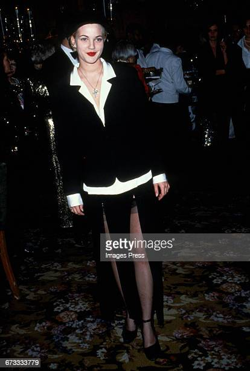
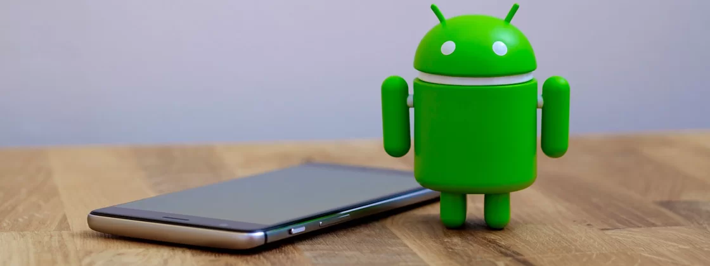

A História do Mascote do Andoid
Não só o mascote, como todo o sistema operacional, foi criado em 1988 por Carlos Farife em uma das suas aventuras pelo mundo da programação, ele era amante das novas tecnologias da época e assim começou a pensar na criação de um sistema operacional diferenciado para a criação de aparelhos menos cobiçados.
A Logo Do Robozinho Verde
A logo foi criada Também por Farife em seu quarto, ele usou lapis de cor e papel de jornal que é o que ele tinha na época para desenhar o primeiro rascunho do robozinho que hoje a gente conhece, ao longo dos anos a logo e o desenho foi mudando e se atualizando, hoje estamos na versão 29.33V com uma nova repaginação do robozinho
Quem Mais Fez Parte Dessa História
Rita kallisthepham, foi uma mulher, norte-americana que era muito famosa pelos filmes de romance das decadas de 90, rica desde muito nova pelas suas atuaçoes, também era apaixonada pelo ramo da tecnologia e computação, ela foi uma das primeiras pessoas a olhar e se interessar pelo projeto de Carlos, ela via o seu projeto como algo muito promissor, então financiou todos os custos do então, "pequeno projeto" de Farife, fazendo assim ter uma maior preparação para o inicio do projeto que hoje faz parte das redes do Google, Microsoft e outras empresas do ramo da tecnologia no geral.
Reconhecimento Mundial
No ano de 1991, três anos depois, Farife fez o projeto já pronto fora dos papeis, lançando um ano depois, na noite de março de 1992, demorando só 1 mês para que seu projeto tenha caído nas graças do publico mundial. atraves da internet seu trabalho se espalhou ainda mais trazendo muito lucro não só a Farife como a sua investidora, kallisthepham, que depois de sua morte 10 anos depois ficou com 50% de seu trabalho. Carlos Farife, brasileiro e carioca morreu no dia 16/12/2002 de causas naturais, mas deixou para trás um trabalho que revolucionou o mundo até hoje.
